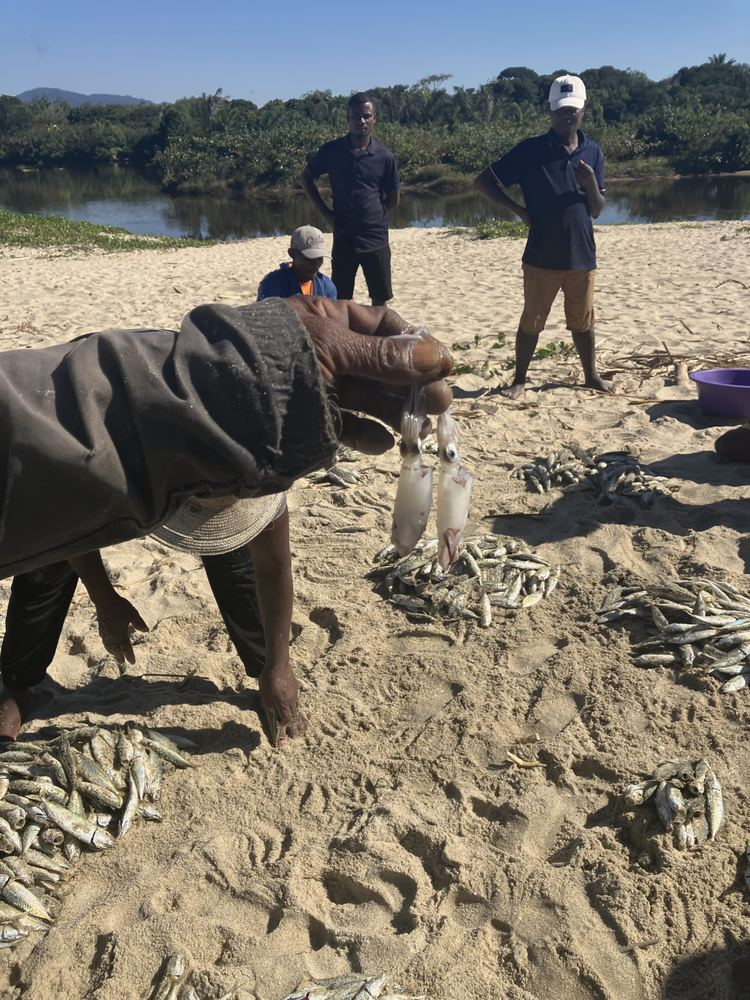

Accueil / Hasina Immersion
Hasina ImmersionUne initiative de la Plateforme LAOVA
Un territoire ne se résume pas à ses paysages.
Il se découvre aussi dans les histoires que l’on raconte, les gestes que l’on transmet, les activités qui font vivre les familles et les initiatives qui construisent demain.

Hasina Immersion est une porte d’entrée vers la Plateforme LAOVA et les réalités humaines, culturelles et communautaires de Maroantsetra. Nous facilitons des rencontres et des expériences personnalisées, pensées à partir de vos intérêts et des possibilités réelles de nos équipes et de nos interlocuteurs locaux.
Il ne s’agit pas d’un programme touristique préétabli. Chaque démarche privilégie l’écoute, la compréhension mutuelle, le respect des personnes et la découverte du travail de LAOVA sur le territoire.
01Une démarche en quatre mouvements
Une grille de sens, pas un itinéraire.
Ces mouvements ne sont pas imposés à chacun. Ils empêchent de réduire l’immersion à la consommation de « lieux authentiques ».
- ComprendreDialoguer avec les membres, les personnes ressources et les partenaires, en découvrant les enjeux patrimoniaux, écologiques ou sociaux des initiatives.
- ParticiperDécouvrir certaines activités associatives ou communautaires, selon leur calendrier et les conditions d’accueil.
- ContribuerLorsque des besoins réels ont été identifiés et qu’une contribution appropriée est possible — sans remplacer un emploi local ni créer une activité artificielle.
- DécouvrirExplorer des aspects du territoire et de sa culture grâce à un accompagnement respectueux, avec des activités facultatives adaptées aux intérêts exprimés.
02Notre protocole
Ce qui guide chaque rencontre.

Ce que nous faisons
- Les personnes et communautés rencontrées peuvent accepter, refuser ou adapter une activité.
- Le consentement est demandé pour chaque photographie et chaque témoignage ; certains savoirs ou lieux n’ont pas vocation à être rendus publics.
- LAOVA reste le point de repère du parcours : accueil, orientation, coordination des contacts, information sur les conditions locales.
- Les coûts réels — hébergement, nourriture, transport sur place, coordination, accompagnement, contributions communautaires — sont identifiés et expliqués.
- Une vigilance renforcée s’applique aux mineurs, aux données personnelles et aux interventions éducatives.
Ce que Hasina n’est pas
- Une agence de voyages ou la « branche tourisme » de LAOVA.
- Un catalogue d’excursions, de forfaits ou de tarifs.
- L’achat d’un volontariat ou d’un accès aux communautés.
- Une activité qui évincerait le travail rémunéré local ou confierait des missions sensibles à des personnes non qualifiées.
03Comment cela se passe
Comprendre, partager, échanger, construire.
Le trajet jusqu’à Maroantsetra peut rester à la charge du participant, selon l’organisation convenue. Accompagnement, logistique, hébergement ou repas ne sont pas garantis d’office : ils se précisent au cas par cas.
- 01
Comprendre
Vous découvrez LAOVA, ses projets et ses principes.
- 02
Partager vos intérêts
Patrimoine, artisanat, environnement, agriculture, recherche, éducation…
- 03
Échanger avec LAOVA
Nous examinons ensemble ce qui est réalisable, pertinent et accepté.
- 04
Construire une possibilité
Une expérience de rencontre qui ait du sens, pour vous comme pour vos interlocuteurs.
04Nous écrire
Dites-nous ce qui vous anime.
L’équipe vous recontacte pour discuter des possibilités et des modalités. Il ne s’agit pas d’une réservation.